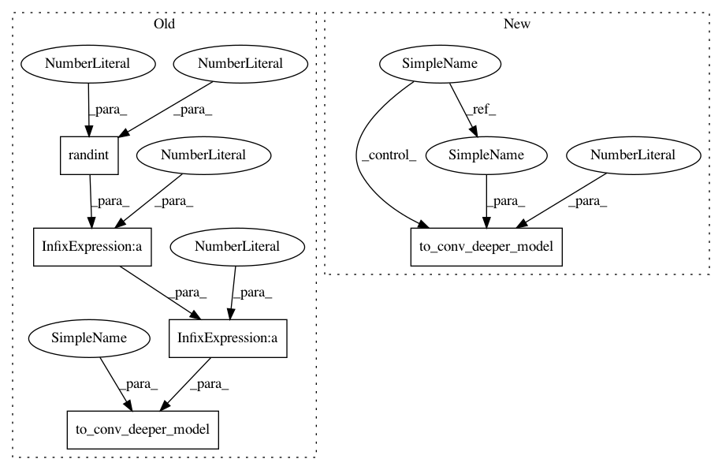

ffbda8a3d7442c4576bbbff2f8c666ff23313fdf,autokeras/net_transformer.py,,to_deeper_graph,#Any#,62
Before Change
for layer_id in deeper_layer_ids:
layer = graph.layer_list[layer_id]
if is_layer(layer, "Conv"):
graph.to_conv_deeper_model(layer_id, randint(1, 2) * 2 + 1)
else:
graph.to_dense_deeper_model(layer_id)
return graph
After Change
for layer_id in deeper_layer_ids:
layer = graph.layer_list[layer_id]
if is_layer(layer, "Conv"):
graph.to_conv_deeper_model(layer_id, 3)
else:
graph.to_dense_deeper_model(layer_id)
return graph
In pattern: SUPERPATTERN
Frequency: 4
Non-data size: 5
Instances
Project Name: keras-team/autokeras
Commit Name: ffbda8a3d7442c4576bbbff2f8c666ff23313fdf
Time: 2018-08-23
Author: jhfjhfj1@gmail.com
File Name: autokeras/net_transformer.py
Class Name:
Method Name: to_deeper_graph
Project Name: jhfjhfj1/autokeras
Commit Name: ffbda8a3d7442c4576bbbff2f8c666ff23313fdf
Time: 2018-08-23
Author: jhfjhfj1@gmail.com
File Name: autokeras/net_transformer.py
Class Name:
Method Name: to_deeper_graph
Project Name: keras-team/autokeras
Commit Name: 7e49a1b4a36229a9aa7d3cffe12a7965c02f41cc
Time: 2018-08-23
Author: jhfjhfj1@gmail.com
File Name: autokeras/net_transformer.py
Class Name:
Method Name: to_deeper_graph